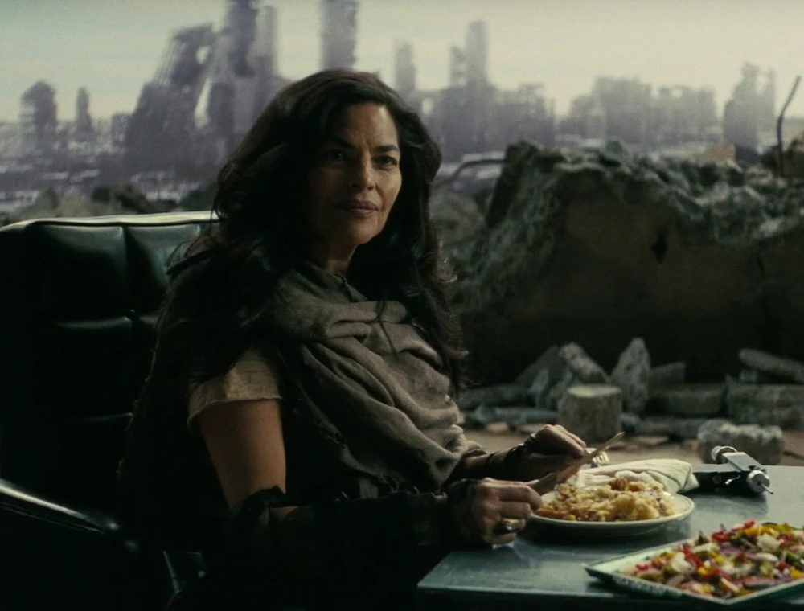
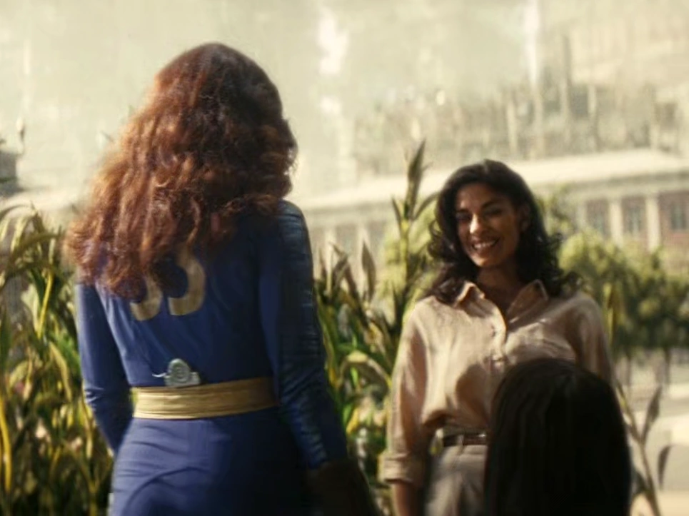

Lee Moldaver (リー・モルデイヴァー)
―― モルデイヴァーがマキシマスに残した最期の言葉
リー・モルデイヴァー (Lee Moldaver) は、Vault 4 の住民には「炎の母」として、最終戦争 前にはケイト・ウィリアムズとして知られていた人物です。 彼女は研究開発のスペシャリストであり、核融合科学者（博士号所持）であり、ドラマ版『Fallout』シーズン1の主要な敵対者です。
シェイディ・サンズの陥落後、モルデイヴァーは2296年までにロサンゼルスで新カリフォルニア共和国 (New California Republic / NCR) 軍の一部隊を率いるようになりました。 彼女は Vault 33 からルーシー・マクレーンの父であるハンクを誘拐し、ルーシーが父をモルデイヴァーから救出するという使命を負うきっかけを作りました。
背景
戦前
最終戦争前、モルデイヴァー（当時はミス・ウィリアムズとして知られていました）は、生涯を常温核融合の研究に捧げてきた核科学者でした。 彼女が研究を完成させることはありませんでした。なぜなら、Vault-Tec 社が最終的に彼女が勤務していたすべての研究企業を買収してしまったからです。 Vault-Tec はその技術を買収し、葬り去りました。実質的に無限のエネルギーは、アメリカの資本主義経済システム、とりわけ Vault-Tec の利益とは相容れないものでした。 安価なエネルギーは、進行中の米中戦争の経済的基盤を取り除いてしまうからです。この過程で彼女は、買収に関与していた Vault-Tec 重役であるバーブ・ハワードと接触し、ウィリアムズは富を得ました。
しかし、戦争を永続させるために自身の研究が奪われ葬り去られたことで、ウィリアムズは企業に対する組織化を始めました。 彼女はハリウッド・フォーエバー墓地での知的サークルの代表となり、そこで演説や講義を行い、アメリカ合衆国に対する Vault-Tec の覇権、とりわけ超富裕層が一般市民にもたらす危険性について警告しました。
頻繁に参加していた一人にハリウッド俳優のチャールズ・ホワイトナイフがおり、彼は後に仲間の俳優であり共演者のクーパー・ハワードをセッションの一つに連れてきました。 ウィリアムズはハワードに会うと微笑み、彼が出演する映画の大ファンだと主張しました。彼女のプレゼンテーション中、ホワイトナイフと同様にアンカレッジの退役軍人でありながら熱烈な反共産主義者でもあったハワードは、彼女の見解を好みませんでした。 彼は当初、彼女のレトリック、特に平均的なアメリカ人はアメリカの権力者たちよりも平均的な中国市民と多くの共通点を持っているという指摘に反発しました。
それを「たわごと」と表現し、彼は演説の途中で退席しようとし、二人の間で対立が生じました。 彼女は彼の振る舞いと過敏さを穏やかに刺激し、彼が立ち去ろうとするのをなだめ、留まって話を聞くよう説得しました。 その際、彼女は彼の妻（バーブ）を知っており、クーパーが知らない彼女の一面を知っていることを明かしました。 彼女は常温核融合の歴史と Vault-Tec の企てについて説明し、クーパーに盗聴器を渡して彼自身で真実を知ることができるようにしました。 彼が拒否すると、彼女はそれを記念品として持っておくよう主張し、自分は共産主義者と呼ばれているがそうではないと述べました。 彼女にとって「共産主義者」とは、社会が狂っていない人々を中傷するために使う汚い言葉に過ぎませんでした。
戦後
モルデイヴァーは最終戦争とその後の200年間を未知の手段で生き延びました。描写から彼女がグールではないことは明らかですが、その他の詳細はほとんどわかっていません。 2277年までに、彼女はシェイディ・サンズ に住む新カリフォルニア共和国 の市民となっていました。
この時期に、彼女はローズ・マクレーンと出会いました。ローズは地上の文明が存続していることを知り、子供たちのルーシーとノームを連れて Vault 33 を去り、シェイディ・サンズ で暮らしていました。 二人は深い関係を築き、地上で新しい生活を形成していたことが示唆されています。
この状況は、ローズの夫であり Vault 33 の監督官であるハンクが彼女を追ってきたことで一変しました。ハンクはローズを説得してVaultに戻そうとしましたが失敗しました。 その理由は後にモルデイヴァーが知ることになります。ハンクは Vault-Tec の従業員であり、その指令は地上の文明の痕跡をすべて破壊し、彼のVault（およびVault 31と32）の Vault-Tec 傘下の人々がウェイストランドでの独占権を確立することでした。 ローズを説得できなかった彼は、子供たちをVaultに連れ戻した後、核爆弾を起爆してシェイディ・サンズ を破壊し、第2次フーバーダムの戦いの後のある時点で、その跡地にクレーターだけを残しました。
モルデイヴァーは破壊された時、シェイディ・サンズ にはいませんでした。その後、モルデイヴァーはロサンゼルス地域の NCR 生存者たちの指導的人物となりました。
Vault 4 に受け入れられた難民たちはトラウマに苦しみ、象徴的にシェイディ・サンズ を取り戻すための宗教的儀式を行い始めました。モルデイヴァーは救済をもたらす「炎の母」となりました。 モルデイヴァーは他の生き残った NCR 部隊を結集し、グリフィス天文台に拠点を設立する一方で、常温核融合を回収する方法を探し続けました。 長年にわたり、彼女はこの地域のよく知られた勢力となり、「炎の母」という異名が広まるにつれて極めて危険な人物という評判を得ました。一部では彼女を「丘の狂女」と表現する者もいました。
常温核融合の回収
彼女の生涯をかけた研究を取り戻すための活動は、2296年に実を結びました。モルデイヴァーは、命を懸けて組織から技術を回収しようとしていたエンクレイヴの科学者、シギ・ウィルゼィグと接触しました。 Vault 32 と Vault 33 の間の「3年ごとのトレード」が近づく中、ウィルゼィグは核融合触媒を持ち出す準備をしました。同時に、モルデイヴァーはその監督官を誘拐するための襲撃を計画しました。 Vault-Tec がその技術を独占所有物にしていたため、ロックを解除するには重役のコードが必要でした。モルデイヴァーのグループは、ローズ・マクレーンの Pip-Boy を使用して Vault 32 に侵入し、新しい監督官と居住者になりすましました（元の居住者は、Vaultの実験に関する真実を知ったときの内戦で全滅していました）。
計略は成功し、モルデイヴァーはルーシーとモンティの結婚式に出席しました。トレードの祝賀会が終わり、Vaultの居住者たちが就寝した後、彼女はすぐに攻撃を命じました。 数人のレイダーが死亡し、16人が捕虜になるなど大きな損害を出しましたが、モルデイヴァーは成功しました。彼女はVault間の通路でハンク・マクレーンと対峙し、居住者たちの命か娘かを選択するよう彼に迫りました。 彼が警戒を解いた隙に、リーはレイダーに彼を麻酔で眠らせ、Vault 32 への通路を爆破して撤退しました。
最終的に2296年、ルーシーはウィルゼィグの首を持って天文台に到着し、父親と交換しようとしました。その代わり、モルデイヴァーはルーシーにハンクに関する真実、彼がシェイディ・サンズ の破壊に関与していたことを明かしました。 衝撃的な暴露と、モルデイヴァーのテーブルの椅子に縛り付けられたフェラル・グールに母のロケットペンダントを見つけたことで、父が母を見殺しにしたことを悟ったルーシーは、父にコードを要求しました。 ハンクは従いました。モルデイヴァーが天文台に設置した常温核融合リアクターに触媒を入れると、それは作動し、チャージを開始しました。
装置がチャージされる中、B.O.S.が天文台の哨戒範囲内に現れました。モルデイヴァーは部隊の指揮を執り、防御を率いるために席を立ち、砲手が戦死した後は自ら対空砲塔を操作しました。 続く戦いで、NCR と B.O.S. の双方が損害を受けましたが、NCR 残存部隊は最終的に壊滅し、B.O.S. は NCR の防衛線を突破して天文台内部へと侵入しました。 モルデイヴァーは戦闘中のどこかで腹部を撃たれましたが、マキシマスの行動によりハンクが逃走し、ルーシーがグール化した母を安楽死させた後にザ・グールと共に追跡を開始した直後、なんとか制御室に戻りました。
マキシマスが意識を取り戻すと、彼女は常温核融合リアクターを起動し、ロサンゼルス地域全体に電力を供給しました。光が灯る中、彼女はローズの隣に座り、彼女の手を握り、ついに自分たちの夢を叶えたと囁きました。 死の間際、モルデイヴァーはマキシマスに B.O.S. に無限の力を与えることの結果について警告し、彼女特有の遠回しな言い方で、彼らを止めようとしてみることを提案しました。
性格
モルデイヴァーは非常に知性的で、カリスマ性があり、目的のためには手段を選ばない冷酷さを持っています。しかし、その根底には「より良い世界を作る」という揺るぎない信念があります。 彼女はクーパー・ハワードに対して見せたように、敵対する者であっても対話を通じて理解を求めようとする一面を持っていますが、同時に Vault 33 への襲撃で見せたように、無関係な人々を巻き込むことや犠牲にすることを厭わない非情さも持ち合わせています。 彼女にとって「共産主義者」というレッテルは無意味であり、真の敵は少数の富裕層のために世界を犠牲にする企業や権力構造でした。
所持品
- レーザーピストル
- 常温核融合の研究データ（戦前）
注記
彼女の戦前の名前「ミス・ウィリアムズ」は、彼女が科学者として活動していた時代のものです。 Vault 4 の住民が崇拝する「炎の母」は、彼女がシェイディ・サンズ の生き残りを導いたことに由来しています。
登場作品
- ドラマ版『Fallout』
- Fallout Shelter（キャラクターとして追加）
リー・モルデイヴァーは、ドラマ版『Fallout』において最も複雑で魅力的なキャラクターの一人であり、シリーズ全体のテーマである「戦争は変わらないが、人は変えられるか」という問いを体現しています。
200年の執念: 戦前から常温核融合という夢を追い続け、文明が崩壊し、愛する人（ローズ）を奪われ、築き上げた都市（シェイディ・サンズ）を破壊されてもなお、最期の瞬間までその夢を諦めなかった彼女の執念は凄まじいものです。
善悪の彼岸: 主人公ルーシーにとっては「父を誘拐した悪党」として登場しますが、物語が進むにつれて彼女こそが被害者であり、真に世界を救おうとしていた革新者であったことが明らかになる構造は、Fallout らしい「視点による正義の違い」を見事に描いています。
マクレーン家との因縁: ハンク・マクレーンとの対立は単なる個人の復讐を超え、Vault-Tec という巨大な悪意と、それに抗う人間の意志の戦いでした。彼女が最期にローズの手を握って逝くシーンは、悲劇的でありながらも救いを感じさせる名場面です。